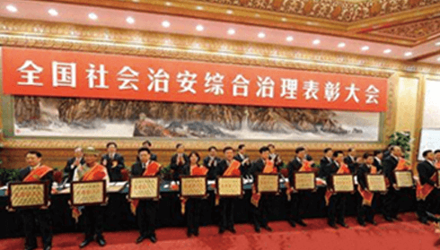
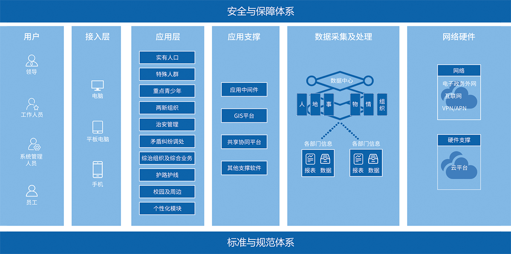
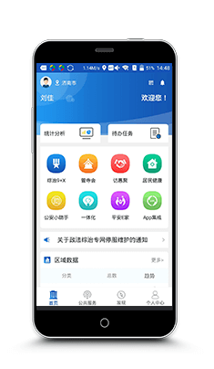
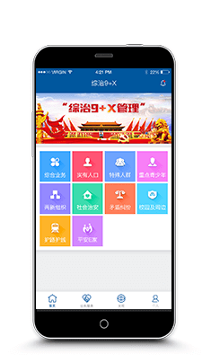
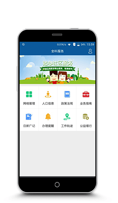
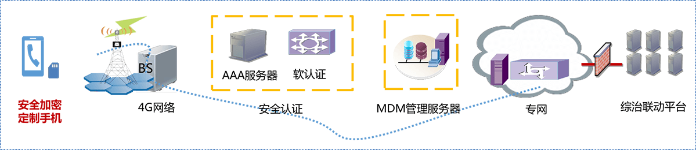
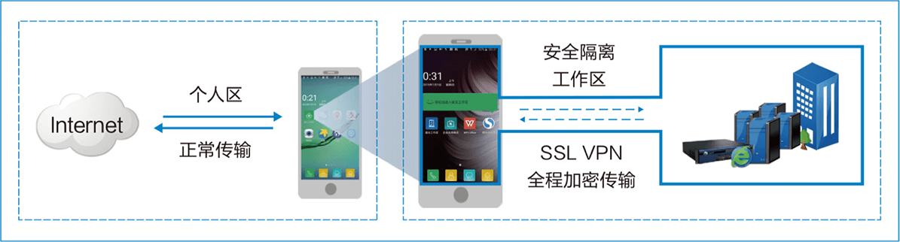

国家政策

习近平总书记在2017年全国社会治安综合治理表彰大会_上指出:要着力推进社会治理系统化、科学化、智能化、法治化,不断完善中国特色社会主义社会治理体系,确保人民安居乐业、社会安定有序、国家长治久安。
习近平总书记在中国共产党第十九次全国代表大会.上明确提出:打造共建共治共享的社会治理格局--加强社会治理制度建设,完善党委领导、政府负责、社会协同、公众参与、法治保障的社会治理体制,提高社会治理社会化、法治化、智能化、专业化水平。
国家要求:由综治办牵头,把综治、政法、公安、司法、维稳、信访、应急、安监、民政、人社、工商、交通、通信、街道等相关部广]联合起来,通过信息化手段打造一个可管、 可控、可信的网格化多级联动的社会综治平台!
客户需求
体制建设
建设"党委领导、政府负责、社会协同、公众参与、法制保障”的社会治理体系。
健全机构,整合力量，完善制度,梳理社会管理目录，再造工作流程。
创新基层工作机制,践行服务型政府理念,倡导居民自治的新风尚。
平台建设
建设网格化的“人、房、地、事、情、组织”信息采集管理协同系统
以信息化系统方式建立丰富、畅通、快速响应的诉求渠道和有效的矛盾化解处理机制。
采用移动化、主动化的信息技术支撑新型基层组织工作机制运行。
平台简介
"智慧综治平台”是以社会治理相关的“人、地、物、情、事、组织”为核心要素,全面整合职能部门]与基层组织的管理服务资源,构建全面覆盖省-市-区(县) -街道(乡镇) -社区(村庄) -网格单元的六级社会综治管理体系,实现综治、政法、公安、司法、维稳、信访、应急、安监、民政、人社、工商、交通、通信、街道等部广]的资源共享和多级联动,通过信息化技术手段打造一一个可管、可控、可信的社会综治信息化平台。

平台价值
1、决策层
实现社会综治由粗放型向精细化的转变
决策层通过"智慧综治平台”可及时掌握辖区内的重要信息、重要事件和各级工作人员的工作情况，实现社会综治由粗放型管理向精细化管理的转变，预防重大责任事故!为各级领导科学管理社会提供决策依据，从根本.上消除不知、漏办、拖办、不办的情况，防范社会风险,从源头上预防和控制重大社会应急事件的发生,强化政府对社会的管控能力，深化平安建设。
2、职能部门
综治资源大整合，打通社会治理数据资源
通过“智慧综治平台”实现安全的数据资源共享,各级职能部广]在同一平台上工作,实现多级联动、信息共享、责任清晰、相互监督、量化考核，提高社会综治工作效率。
3、工作人员
统一管理指挥，随时掌握动态，保障社会稳定
建立省-市-县三级管理指挥中心,对综治事件及其处理情况进行24小时监控，随时掌握重大社会事件及其进展和处理情况,保障辖区内的社会稳定。
移动办公，提高事件发现、流转和处理效率
综治工作人员通过“指挥综治平台”可实现手机移动办公，随时随地对各类事件进行上报、分流、处置和反馈,提高事件发现、流转和处理效率， 有利于实现“小事不出社区(村庄)， 大事不出街道(乡镇)”的工作目标。
4、人民群众
听民意、解民忧、集民智，更好的服务群众
通过“智慧综治平台”可拉近职能部门、综治人员与广大群众的距离,及时了解群众的诉求,听民意、解民忧、集民智，更好地服务于人民群众,是切实践行党的群众路线教育实践活动的具体体现。
发动群众参与社会综治，布下一张天罗地网
通过“智慧综治平台”的公众端,发动身边群众以”朝阳群众”为榜样,积极参与社会综治活动，发现异常及时举报,在网格员的基础上，再布下一-张“天罗地网”
经典案例

新疆维吾尔族自治区
社会治安综合治理应用系统

山东政法委社会治安综合治理平台

济南市历下区建新街道办事处
智慧网格信息化管理平台
安全管控
1、网络架构与安全解决方案
VPDN专网隧道认证
平台分配账号和手机号码与VPDN专网绑定,移动端与智慧综治平台之间通过专网联通,可有效避免互联网弓|起的信息泄露和恶意攻击。
软认证
通过软认证技术实现远程线上身份验证和数字证书签名的模式实现网络身份安全认证。

2、网络接入及传输安全
高强度身份认证
用户进入安全隔离区前必须通过严格身份认证，保障用户身份安全。
基于角色的授权
用户归属不同部门，应用权限不同。例如：网格员可以下载网格化管理应用，他的领导可以下载统计应用。
数据传输加密
支持标准商密算法及国密SM1、SM2、 SM3、 SM4算法,即便在异地也可以放心办公,无需担心数据被黑客窃取和篡改。

Copyright © 山东车微联信息技术股份有限公司
鲁ICP备12025220号-5
鲁公网安备 37010202001223号